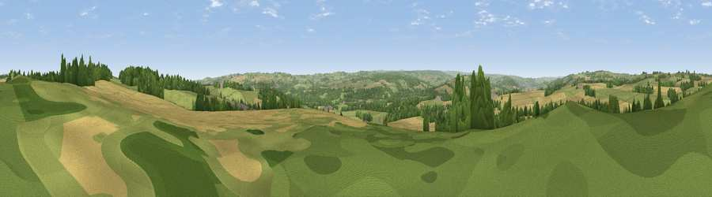

Viewpoint near Newton
#19778 in England · top 45% of its area beats it · near NewtonThe view, rendered

A 360° render of this exact spot computed from the terrain model, tree cover and land cover — summer colours, afternoon light, calibrated against photographs of famous viewpoints. Real trees, hedges and buildings will differ in detail.
The panorama
Grey silhouette: terrain skyline in each direction (720 bearings, Earth curvature and refraction included). Dashed green: skyline with trees (+15 m) and buildings (+8 m) as obstacles. Blue strip: how far the ground is visible on each bearing.
Where the view opens
Wedge length = distance to the farthest visible ground on that bearing (vegetation-aware). Rings at 10, 25 and 50 km.
What fills the view
39% cropland · 39% grassland · 21% woodland · 1% built-up
Angular shares of the visible panorama (visual magnitude), not map area. Landscape diversity 0.49 (0–1 Shannon).
Key numbers
More beautiful places nearby
The staircase of upgrades: each row has a higher view potential than everything closer. Driving times are estimates from straight-line distance, calibrated against real road routing — check an actual route before setting out.
| Place | Direction | Drive | Score |
|---|---|---|---|
| Whittington Hill | NE · 1 km | ~4 min | 61.3 |
| Viewpoint near High Mickley | SE · 6 km | ~12 min | 68.0 |
| Viewpoint near High Mickley | ESE · 6 km | ~13 min | 68.3 |
| Viewpoint near Hedley on the Hill | SE · 7 km | ~15 min | 69.5 |
| Viewpoint near Hedley on the Hill | SE · 7 km | ~15 min | 69.8 |
| Currock Hill | SE · 8 km | ~17 min | 70.4 |
| Viewpoint near Hedley on the Hill | SE · 9 km | ~17 min | 71.5 |
| Viewpoint near Greenside | ESE · 10 km | ~19 min | 74.2 |
54.97757, -1.95193 · source: screening · position refined by local search. Computed location — check access rights before visiting.